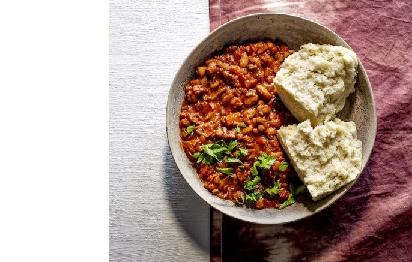

Beans Curry and Steamed Bread Recipe

Description
Ok lets start with my childhood favourite that will always have a special place in my heart Sugar Beans and Steamed Bread.
This meal is best enjoyed in Winter or on rainy days, nothing beats plate of Steamed bread fresh off the stove and a bowl of tasty Sugar beans Soup.
Ingredients
Beans Soup
- 500 g sugar beans
- 1 onion
- 1 T oil
- 1/2 green pepper
- 2 t curry powder
- 2 large tomatoes, blended
- 2 beef or vegetable stock cubes
- 2 litres water
- salt, to taste
Steamed Bread
- 1 kg cake flour
- 2 t salt
- 2 1/2 cups lukewarm water
- 30 g butter, melted
- 2 T sugar
- 1 x 10 g packet dry active yeast
Steps
- To make the ujeqe, mix the flour and salt. In a separate bowl, mix the water, sugar and yeast. Cover and set aside until the yeast starts to rise, about 15 minutes
- Once the yeast has risen, whisk in the melted butter and slowly add the dry ingredients. Mix until a stiff dough starts to form.
- Knead for 8–10 minutes, until the dough is smooth. Place in a greased heatproof bowl and allow to rise until doubled in size. Knock down and return to the greased bowl. Allow to rise until it has doubled in size again.
- To make the ubhonsisi, soak the beans in 2 cups water for 2–3 hours. Bring the remaining water to a boil in a medium-sized saucepan. Once boiling, add the beans and reduce to a simmer. Cook for 1 hour or until soft, stirring every 15 minutes.
- In a separate saucepan pour 1 T oil and sauté the onion until soft and lightly browned. Add the green pepper and cook until soft. Add the curry powder and cook for 2 minutes
- Deglaze the pan with the tomatoes. Add the stock cube and cook for 10 minutes.
- Once the beans are cooked, add them to the sauce and simmer for 15 minutes.
Home